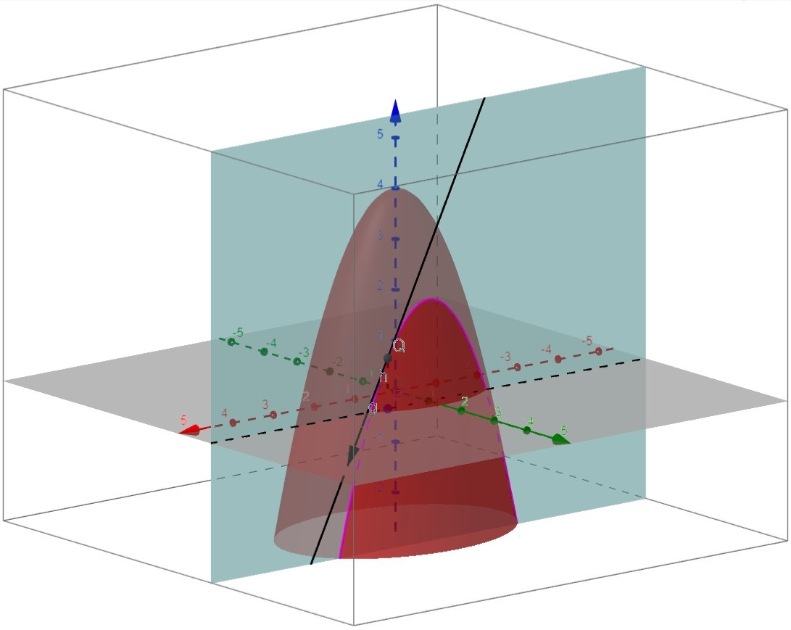
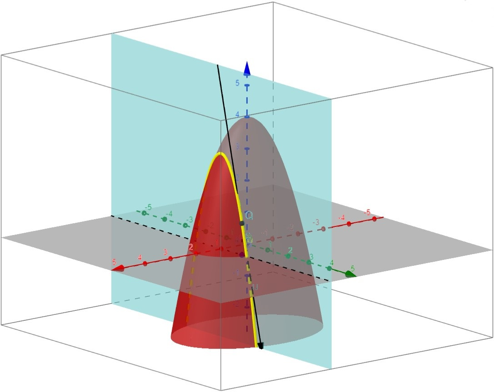

Derivadas parciales
Contents
3.1. Derivadas parciales#
3.1.1. Derivadas parciales para una función de dos variables#
Antes de entrar en materia, te recomendamos que pongas al día tus conocimientos de derivadas para funciones de una variable. Puedes consultar:
Ahora, si nos enfrentamos a una función que dependa de dos variables independientes (normalmente denotadas como \(x\) e \(y\)), podemos calcular su derivada respecto a cada una de estas variables, suponiendo que la otra queda congelada. Este proceso se denomina diferenciación parcial, y el resultado se conoce como derivada parcial de \(f\) con respecto a la variable elegida (\(x\) o \(y\)).
¡Vamos a formalizar la definición!
Por cierto, las gráficas que mostramos han sido obtenidas con la aplicación de Geogebra de Laura del Río que podéis ver aquí: https://www.geogebra.org/m/CH9CR9tb.
Definition (Derivadas parciales para funciones de dos variables)
Sea \(f:\mathbb{R}^{2} \to \mathbb{R}\) y \(\left(x_{0}, y_{0}\right)\) un punto en el dominio de \(f\). Definimos las derivadas parciales de \(f\) en \(\left(x_{0}, y_{0}\right)\) como los límites, si existen,
\(\displaystyle\frac{\partial f}{\partial x} \left(x_{0}, y_{0}\right) := \lim_{h\to 0}\frac{f\left( (x_{0}, y_{0}) + h(1,0) \right)-f\left(x_{0}, y_{0}\right)}{h} = \lim_{h\to 0}\frac{f\left(x_{0}+h, y_{0} \right)-f\left(x_{0}, y_{0}\right)}{h}\),
\(\displaystyle\frac{\partial f}{\partial y} \left(x_{0}, y_{0}\right) := \lim_{h\to 0}\frac{f\left( (x_{0}, y_{0}) + h(0,1) \right)-f\left(x_{0}, y_{0}\right)}{h} = \lim_{h\to 0}\frac{f\left(x_{0}, y_{0}+h \right)-f\left(x_{0}, y_{0}\right)}{h}\).

{kind=link}
{kind=link}
Nota: En la práctica, para funciones suficientemente regulares, si queremos calcular la derivada parcial respecto a \(x\), consideramos \(y\) como una constante y derivamos respecto a \(x\) (respectivamente, si queremos calcular la derivada parcial respecto a \(y\), consideramos \(x\) constante y derivamos respecto a \(y\)), como mostramos en el siguiente ejemplo:
\( \displaystyle f(x,y) = 5x^3y^2+4x^2y^3 \to \displaystyle\frac{\partial f}{\partial x}(x,y) = 15x^2y^2+8xy^3\),
\( \displaystyle f(x,y) = 5x^3y^2+4x^2y^3 \to \displaystyle\frac{\partial f}{\partial y}(x,y) = 10x^3y+12x^2y^2\).
Interpretación geométrica: Como se puede ver en las ilustraciones anteriores,
Si \(y=y_{0}\), entonces \(z = f\left(x,y_{0}\right)\) representa la curva formada por la intersección de la superficie \(z = f(x,y)\) con el plano \(y=y_{0}\). Por lo tanto, la derivada parcial respecto a \(x\) en el punto \(\left(x_{0}, y_{0}\right)\) será la pendiente de esta curva en dicho punto.
Análogamente, la derivada parcial respecto a \(y\) en el punto \(\left(x_{0}, y_{0}\right)\) será la pendiente de la curva fruto de la intersección del plano \(x = x_{0}\) con la superficie \(z = f(x,y)\).
Remark (Notación para derivadas parciales)
Si \(z = f(x,y)\), denotaremos, indistintamente, sus derivadas parciales mediante
\(\displaystyle \frac{\partial f}{\partial x}(x,y) = \left.\frac{\partial f}{\partial x}\right|_{(x,y)} = f_{x}(x,y) \),
\(\displaystyle \frac{\partial f}{\partial y}(x,y) = \left.\frac{\partial f}{\partial y}\right|_{(x,y)} = f_{y}(x,y) \).
3.1.2. Derivadas parciales para funciones de dos variables con Python#
Veamos ahora cómo calcular derivadas parciales utilizando sympy.
La función clave es sp.diff. que debe llevar como argumentos la expresión a derivar (o función Lambda, también vale) y, a continuación, la variable respecto a la que queremos hacerlo.
Veamos un par de ejemplos:
import sympy as sp
x, y = sp.symbols('x y', real=True) # define las variables simbólicas x, y
f_expr = 5* x**3 * y**2 + 4* x**2 * y**3
df_x_expr = sp.diff(f_expr,x) # Derivada parcial respecto a x
df_y_expr = sp.diff(f_expr,y) # Derivada parcial respecto a y
df_x = sp.Lambda((x,y),df_x_expr) # Creamos una función Lambda para la derivada respecto x
display(df_x_expr)
display(df_y_expr)
print("df_x(1,2): ",df_x(1,2)) # Usamos la función Lambda para evaluar la derivada en un punto
display(df_x)
df_x(1,2): 124
3.1.3. Derivadas parciales para una función de tres o más variables#
El concepto de derivación parcial que hemos definido para una función de dos variables, se puede extender de forma directa a funciones con tres o más variables, como veremos a continuación.
Definition (Derivadas parciales para funciones de tres variables)
Sea \(f:\mathbb{R}^{3} \to \mathbb{R}\) y \(\left(x_{0}, y_{0}, z_{0}\right)\) un punto en el dominio de \(f\). Definimos las derivadas parciales de \(f\) en \(\left(x_{0}, y_{0}, z_{0}\right)\) como los límites, si existen,
\(\displaystyle\frac{\partial f}{\partial x} \left(x_{0}, y_{0}, z_{0}\right) := \lim_{h\to 0}\frac{f\left( (x_{0}, y_{0}, z_{0}) + h(1,0,0) \right)-f\left(x_{0}, y_{0}, z_{0}\right)}{h}\),
\(\displaystyle\frac{\partial f}{\partial y} \left(x_{0}, y_{0}, z_{0}\right) := \lim_{h\to 0}\frac{f\left( (x_{0}, y_{0}, z_{0}) + h(0,1,0) \right)-f\left(x_{0}, y_{0}, z_{0}\right)}{h}\),
\(\displaystyle\frac{\partial f}{\partial y} \left(x_{0}, y_{0}, z_{0}\right) := \lim_{h\to 0}\frac{f\left( (x_{0}, y_{0}, z_{0}) + h(0,0,1) \right)-f\left(x_{0}, y_{0}, z_{0}\right)}{h}\).
Nota: Al igual que para funciones de dos variables, para calcular la derivada parcial respecto a una de las variables, consideramos las otras como constantes y derivamos la función respecto a la variable de que se trate como si fuera una función de una única variable. Por ejemplo:
\( \displaystyle f(x,y,z) = 5 x^4 y^3 z^2 + 4 x^2 y^3 z^4 \to \displaystyle\frac{\partial f}{\partial x}(x,y,z) = 20 x^3 y^3 z^2 + 8 x y^3 z^4\),
\( \displaystyle f(x,y,z) = 5 x^4 y^3 z^2 + 4 x^2 y^3 z^4 \to \displaystyle\frac{\partial f}{\partial y}(x,y,z) = 15 x^4 y^2 z^2 + 12 x^2 y^2 z^4\),
\( \displaystyle f(x,y,z) = 5 x^4 y^3 z^2 + 4 x^2 y^3 z^4 \to \displaystyle\frac{\partial f}{\partial y}(x,y,z) = 10 x^4 y^3 z + 16 x^2 y^3 z^3\).
Por supuesto, el cálculo de derivadas parciales para funciones con tres variables utilizando Sympy es totalmente análogo a lo ya visto para funciones de dos variables, como mostramos a continuación.
import sympy as sp
x, y, z = sp.symbols('x y z', real=True) # define las variables simbólicas x, y, z
f_expr = 5* x**4 * y**3 * z**2 + 4* x**2 * y**3 * z**4
df_x_expr = sp.diff(f_expr,x) # Derivada parcial respecto a x
df_y_expr = sp.diff(f_expr,y) # Derivada parcial respecto a y
df_z_expr = sp.diff(f_expr,z) # Derivada parcial respecto a z
df_x = sp.Lambda((x,y,z),df_x_expr) # Creamos una función Lambda para la derivada respecto x
display(df_x_expr)
display(df_y_expr)
display(df_z_expr)
print("df_x(1,2,3): ",df_x(1,2,3)) # Usamos la función Lambda para evaluar la derivada en un punto
display(df_x)
df_x(1,2,3): 6048
3.1.4. Derivadas parciales de orden superior#
Al igual que hacíamos para funciones de una variable, introduciendo derivadas segundas, terceras, etc., en funciones de varias variables podemos introducir las derivadas parciales de las funciones derivadas parciales, para obtener de este modo las derivadas parciales segundas, terceras, …
Por ejemplo, para una función \(z=f(x,y)\), dependiente de dos variables, podemos definir:
Derivada parcial de orden 2, respecto a \(x\) dos veces:
\[ \frac{\partial}{\partial x}\left(\frac{\partial f}{\partial x}\right) = \frac{\partial^{2}f}{\partial x^2}=f_{xx}. \]Derivada parcial de orden 2, primero respecto a \(x\) y luego respecto a \(y\):
\[ \frac{\partial}{\partial y}\left(\frac{\partial f}{\partial x}\right) = \frac{\partial^{2}f}{\partial y \partial x}=f_{xy}. \]Derivada parcial de orden 2, primero respecto a \(y\) y luego respecto a \(x\):
\[ \frac{\partial}{\partial x}\left(\frac{\partial f}{\partial y}\right) = \frac{\partial^{2}f}{\partial x \partial y}=f_{yx}. \]Derivada parcial de orden 2, respecto a \(y\) dos veces:
\[ \frac{\partial}{\partial y}\left(\frac{\partial f}{\partial y}\right) = \frac{\partial^{2}f}{\partial y^2}=f_{yy}. \]
El segundo y tercer caso se denominan derivadas parciales mixtas. Tienen una propiedad importante:
Property (Igualdad de las derivadas parciales mixtas)
Si \(f\) es una función de dos variables tal que \(\frac{\partial^{2}f}{\partial y \partial x}\) y \(\frac{\partial^{2}f}{\partial x \partial y}\) son funciones continuas en un disco abierto \(D\), entonces, para cualquier punto \((x,y)\in D\),
En cuanto al cálculo en Sympy de las derivadas parciales de orden superior:
import sympy as sp
x, y = sp.symbols('x y', real=True) # define las variables simbólicas x, y
f_expr = 5* x**3 * y**2 + 4* x**2 * y**3
df_xx_expr = sp.diff(f_expr,x,x) # Derivada parcial respecto a x dos veces. También se puede escribir sp.diff(f_expr,x,2)
df_yx_expr = sp.diff(f_expr,x,y) # Derivada parcial primero respecto x, luego respecto y
df_xy_expr = sp.diff(f_expr,y,x) # Derivada parcial primero respecto y, luego respecto x
df_yy_expr = sp.diff(f_expr,y,y) # Derivada parcial respecto a x dos veces
display(df_xx_expr)
display(df_yx_expr)
display(df_xy_expr)
display(df_yy_expr)